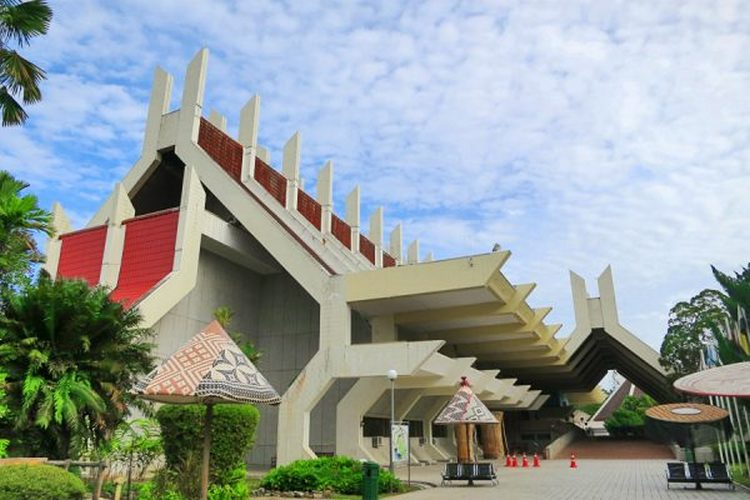 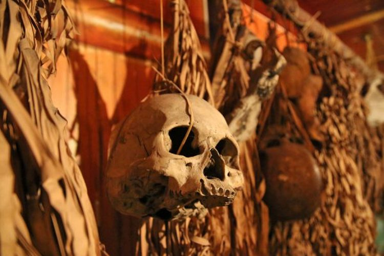 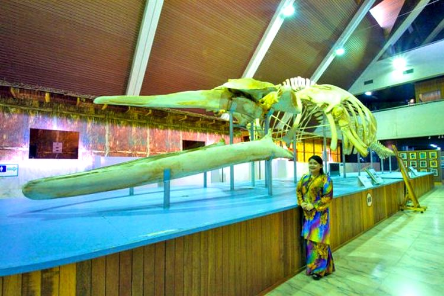 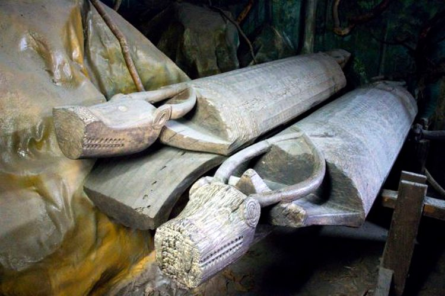
沙巴州博物館座落在州回教堂後面的舊皇宮山BUKIT ISTANA LAMA上，它是以RUNGUS及MURUT部族的長屋的形式而建。這座博物館擁有豐富的歷史資料、各部族的寶貴珍藏及土著居民的手工藝品等。 此館亦收藏了一些重要的陶瓷作品。最吸引人注目的是這裡展示了沙巴六大族群的傳統屋子，其形狀大小和真正的屋子是一模一樣的。 沙巴州博物館還有沙巴獨有的動植物種類之展示空間、一座藝術畫廊及一座科學中心。科學中心大量的展出有關原油及石油工業的資料的資料。 整座大廈內還設有，餐館、咖啡廳、紀念品專賣店以及一座建有人造湖的植物園。
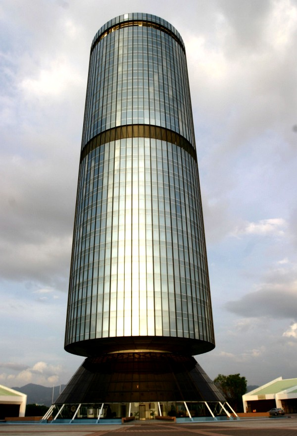
31層樓高的沙巴基金局大廈，座落在LIKAS灣，距離哥打京那巴魯大約10分鐘的車程。 這是一座擁有72個邊的大型、現代化、全由玻璃覆蓋的大廈。它是一座非常顯眼的城市座標，從數英哩外都可以看到這座大廈。
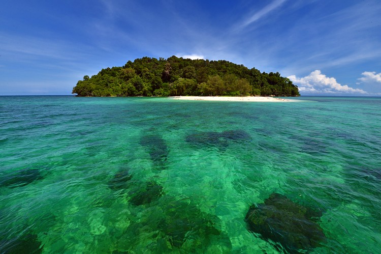 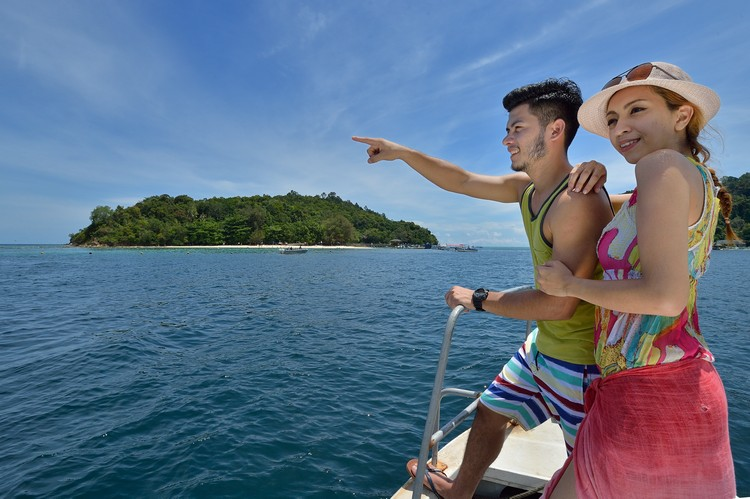 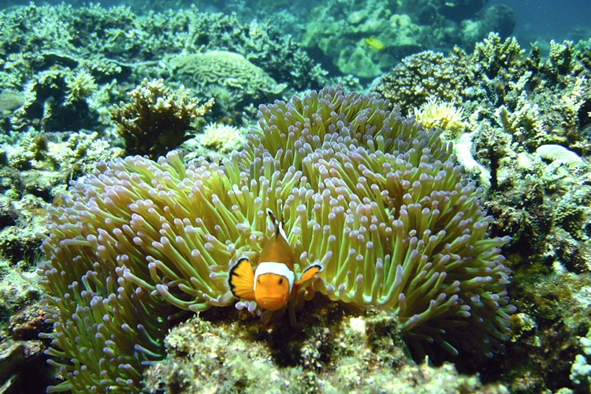 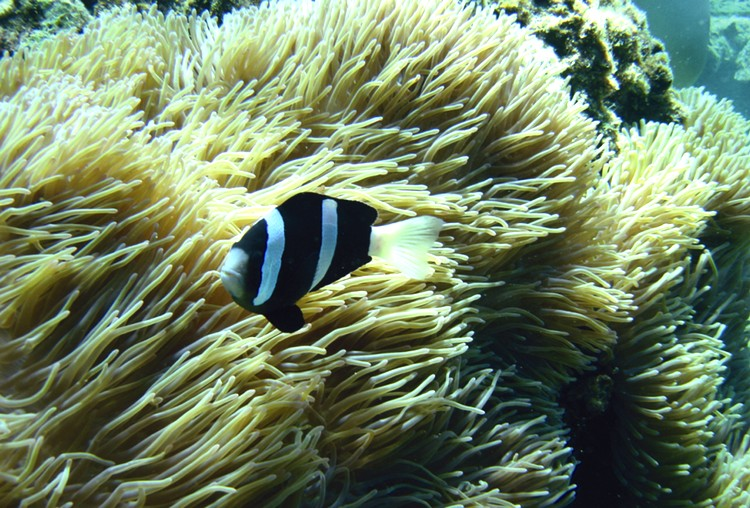
從哥打京那峇魯乘坐快艇，大約20分鐘，即可抵達這座50公頃大的海洋公園，東姑阿都拉曼海洋公園是由5座島嶼所組成，這裡是度假休閒的絕佳地方，潔白的沙灘，清澈的海水，非常適合進行水上運動，如：潛水活動或潛入水中觀察海底生物以及海底攝影等。
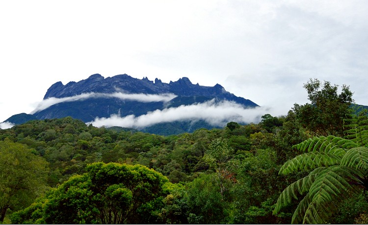 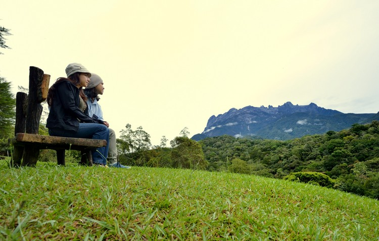 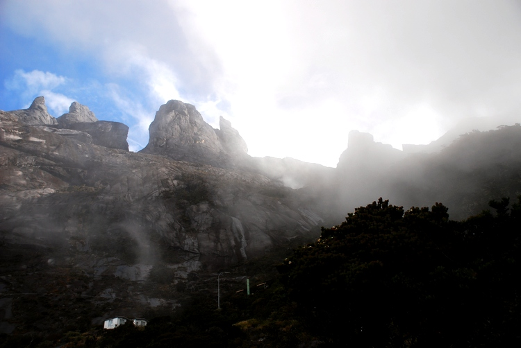 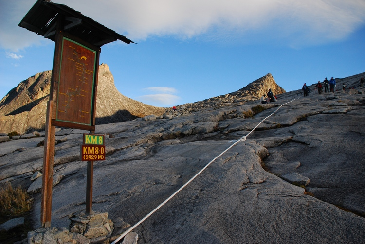 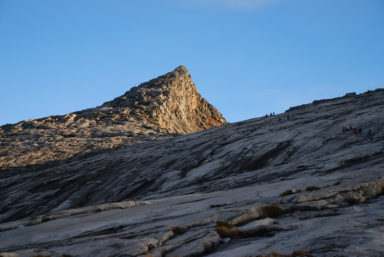
京那峇魯山是婆羅洲克洛克山脈及馬來西亞最高的一座山，其高度是4,095公尺。它掌控了京那峇魯國家公園的整個地形，距離哥打京那峇魯大約85公里。 京那峇魯國家公園是一座森林保留區，其含蓋的範圍有754平方公哩。從哥打京那峇魯出發，前往國家公園位於海拔1558公尺的總辦事處，約需兩小時車程。在此，一天的溫度變化可從攝氏13度至20度。 這座國家公園不僅是爬山愛好者喜歡到來，許多大自然愛好者亦紛紛來此遊玩，他們的主要目的是賞鳥、賞蝶以及觀察這裡獨特的動植物。 此地有罕見的“吃昆蟲”植物、野生胡姬﹙蘭花﹚及全世界最大的花卉，RAFFLESIA，其花朵綻放時對角可達45公分﹙18吋﹚長。 此座國家公園的動植物生態非常多元，從低地雨林到溫帶的森林橡樹，再到高山上的松柏樹等，皆可在此找到。 最出名的遊玩國家公園的方法，就是攀爬京那峇魯山，或者您也可以循著國家公園總辦事處周圍的森林小徑，進行探索之旅。 從山腳下攀爬到京那峇魯山頂，再光榮下山，需要2至3天的時間，主要得看當時的氣候及爬山者的體能狀況而定。 在登山的沿途，設有幾個休息站。至1994年為止，總共有超過2萬9千人登上LOW’S PEAK，京那峇魯山的最高峰。
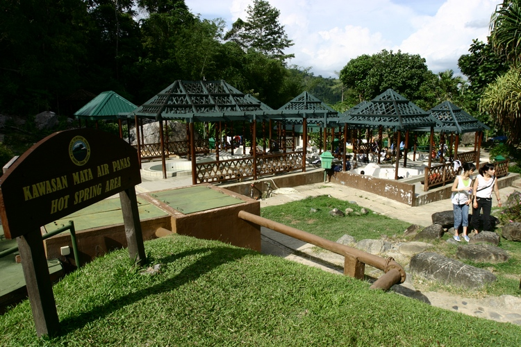 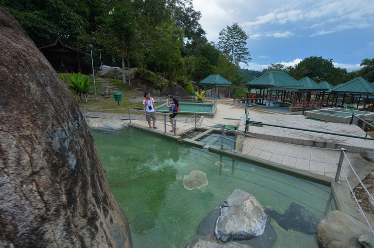 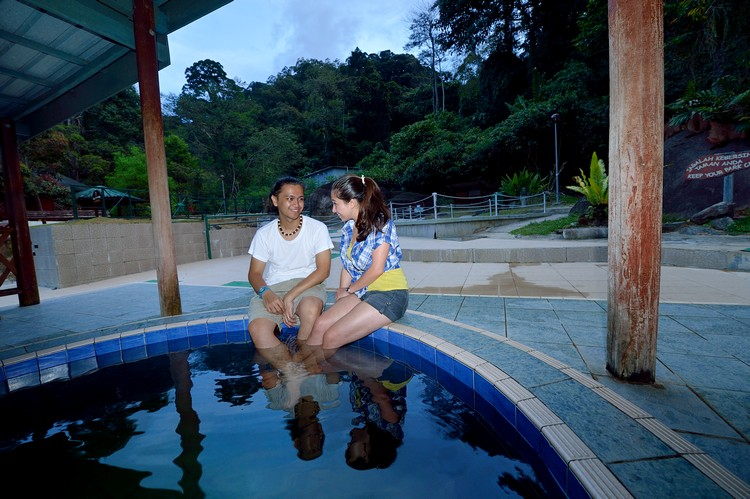 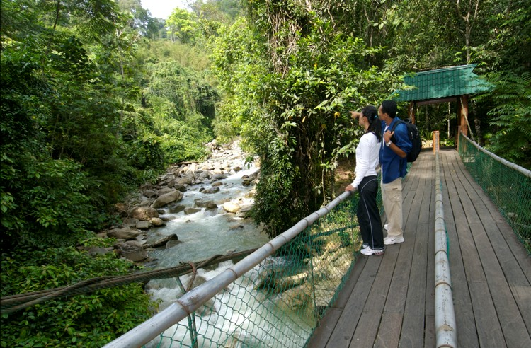
距離公園總辦事處大約40公里有一座波令溫泉。這是一座擁有沐浴設施的露天熱硫磺溫泉，座落在規劃良好的園地內。 這裡建有一座座隔間的混凝土水池，並且有兩條水管通往這些水池，一條是供應熱溫泉水，另一條則供應冷水，到此享受溫泉者還可以依需要來調節水溫。這一帶地區有許多森林小道，可以通往溪流、瀑布區及洞穴。
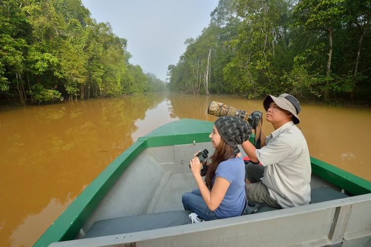 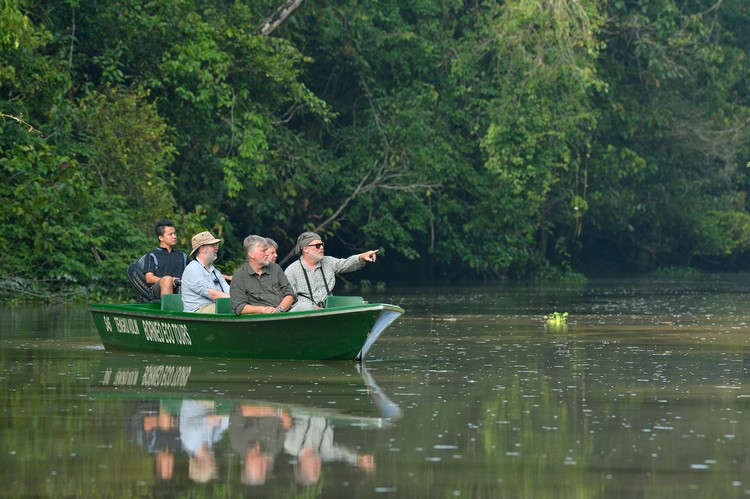 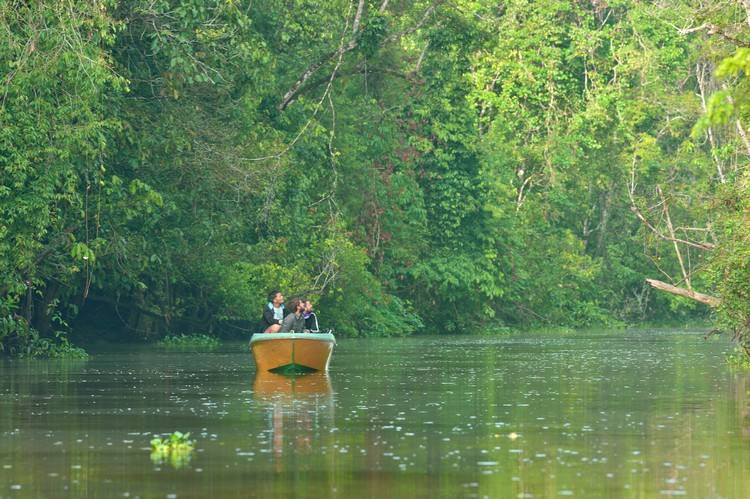 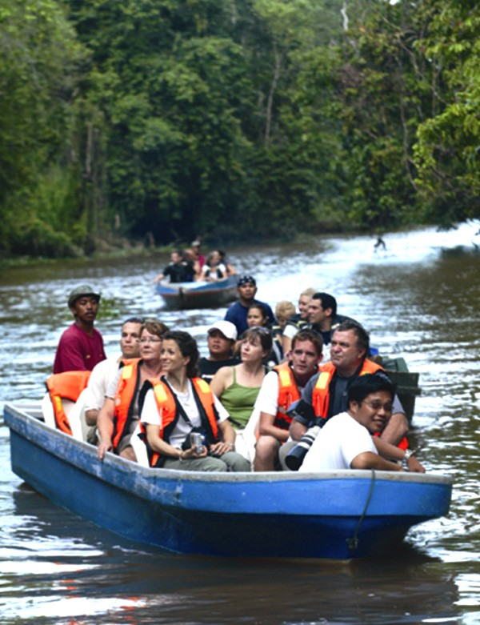
京那岸巴當河是沙巴最長的一條河，其蓄水範園約有6千4百平方英哩﹙1萬6千5百74平方公里﹚。 河的源頭位於中婆羅洲的山脈，向東直流330英哩，奔入SULU蘇祿海。京那巴當岸河的下游平原，非常貧瘠，不適合耕種，不過，這裡卻是野生動植物的集中所。 此地最著名的生物是長鼻猴，其雄猴皆擁有下垂的鼻子、大大的腹部以及粗大的白尾巴。 其他吸引人的動物包括野人ORANG UTAN，獼猴、大象、雲豹、犀鳥、鱷魚、麝貓及水獺等。此地還可觀賞到翠鳥、白鷺及其他品種的鳥類。
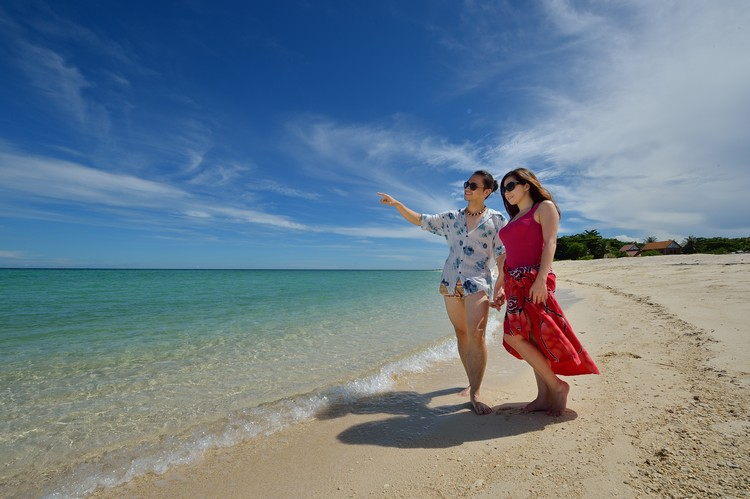 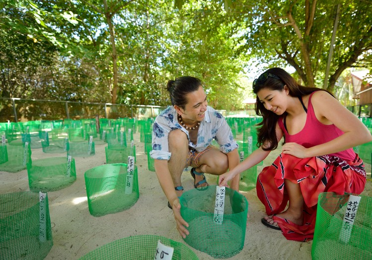
在山打根以北40公里處的SULU海峽上，有一組8座島嶼合在一起的海龜島嶼公園。 其中比較大的島嶼是PULAU SELINGAAN、PULAU BAKUNGAN KECHIL及PULAU GULISAN。 每年的7月至10月，綠背龜及玳瑁龜皆會來此下蛋。SELINGAAN島擁有渡假屋的設施。從山打根乘船到此，需要1至3小時。
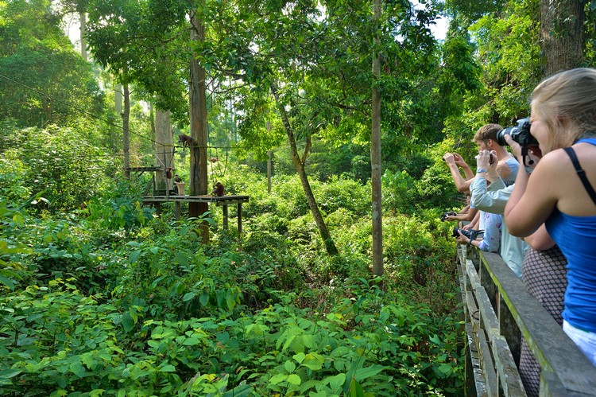 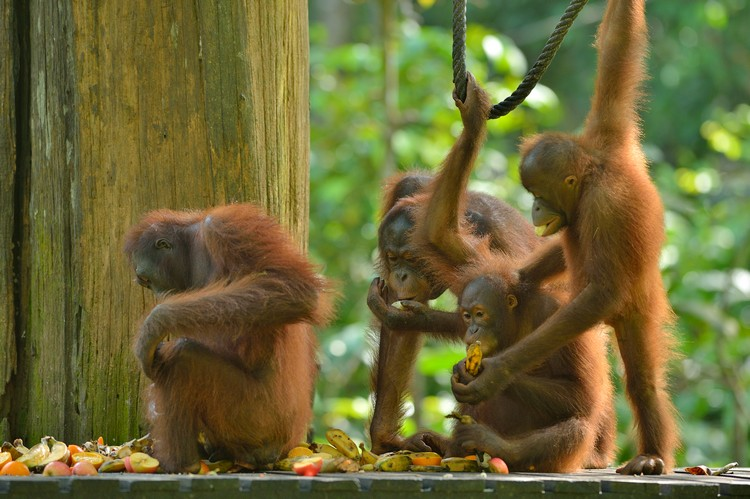 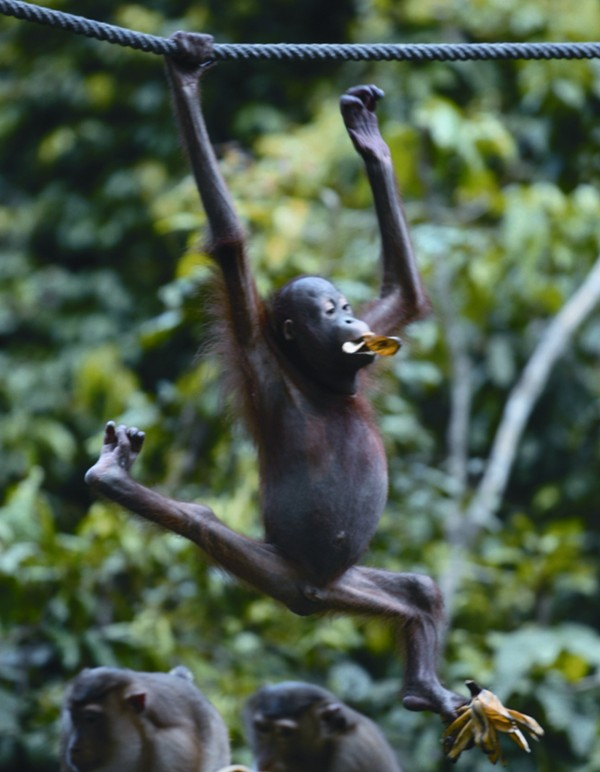
SEPILOK紅毛猩猩保護區距離山打根24公里，是全世界唯一有專人教導紅毛猩猩APE攀爬技巧的地方。在這個復原中心，許多被俘的動物，受到重新訓練以使它們能更加適應森林的生活。這裡提供近距離接觸罕見動物的機會，您在其他地方末必會有這種機會。 觀賞這些動物的最佳時間是早上10點及下午2點30分，這時候這些靈長類動物會從森林區中，湧到這裡來，以獲取每日固定分配給它們的香蕉和牛奶。你可以在離保護區中心大約20分鐘路程的一個平台上，觀賞專人為ORANG UTAN準備食物及餵食。 ORANG UTAN，被暱稱為“婆羅洲野人”，是栖於樹木的紅毛猩猩。當這些動物能夠獨立求生時，它們皆會被放回森林去。在SEPILOK總共5千6百66公頃的森林保留區內，還庇護有其他種類的哺乳動物、超過兩百種類的鳥類及各種各樣的野生植物。
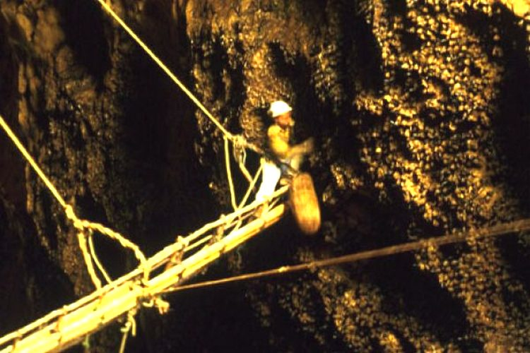 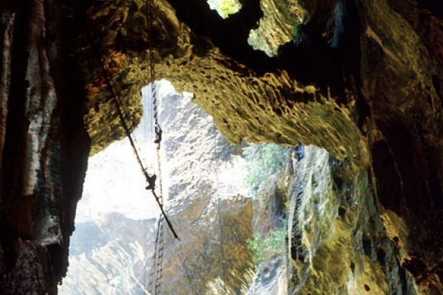
GOMANTONG洞穴位於山打根以南30公里處，這兩座大洞窟是一百萬隻褐雨燕的家園。 距離行政登記中心10分鐘路程的SIMUD HITAM CAVE，是黑燕的窩巢。其價值遠比SIMUD PUTIH CAVE所找到的白燕窩巢來得低。這些燕窩由特許採集人員每兩年收採一次，他們必須使用簾梯及竹竿等工具。 此外，洞穴內的鐘乳石及石筍亦是非常值得研究。參觀GOMANTONG洞穴需要一整天的行程，您可以透過旅遊社或山打根森林局來為您安排。
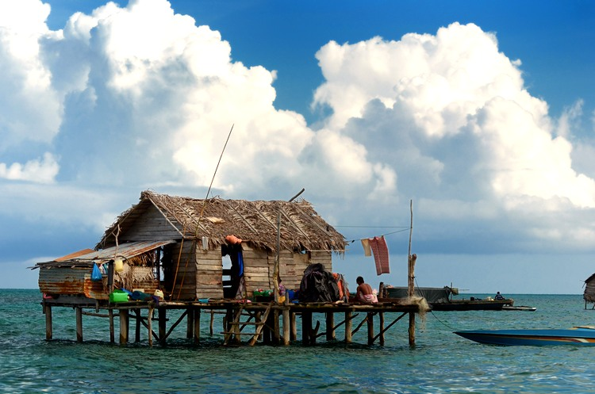 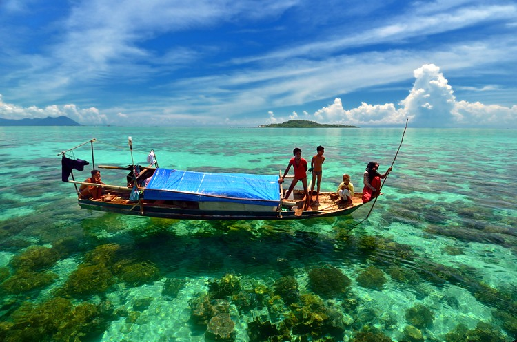 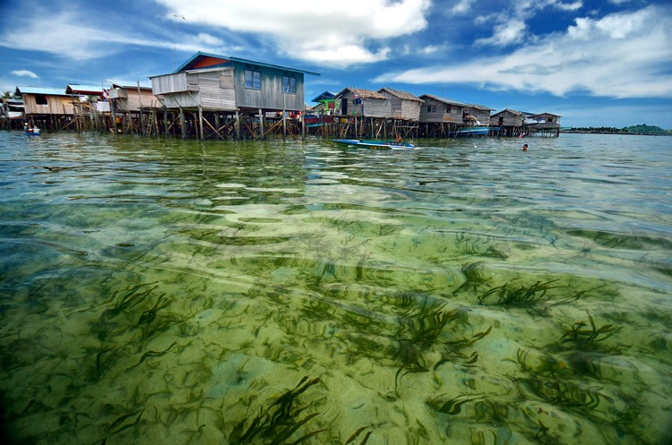
仙本那原本只是一座小漁村，不過，現在它已發展成為著名的海底世界旅遊中心了。這裡提供各式各樣的水上運動，如：潛水、泛舟、水上衝浪，或者遊客可以由此啟程前往數個著名的離島。 這裡可以輕易的從漁船上買到新鮮的漁獲，並且，還可以攜帶到酒店親自下廚或交給酒店處理。 PULAU BOHEY DULANG是一座寧靜的火山島，距離仙本那不遠，此島亦是一處日本珍珠文化站。距離仙本那不遠處的TINGKAYU是一座乾枯了的史前湖泊，這裡挖掘出來的石器工具很有考古價值。 這些器具和其他東南亞地區所挖掘到的一萬年前之古器具，擁有非常類似的質地及技藝。
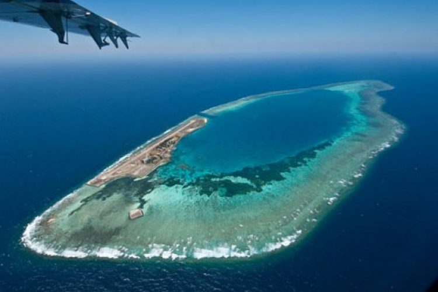

拉央拉央島位於哥打京那峇魯西北大約160海里的地方，它是一座環狀珊瑚島。島的整個邊緣海床，下滑達兩公哩，其能見度是55米。 圍繞在此島的海底生物包括：錘頭鯊魚、鷂魚、玳瑁海龜、鮪魚﹙金槍魚﹚及珊瑚等。參觀此島的最佳季節是介於二月至九月，風平浪靜的時候。